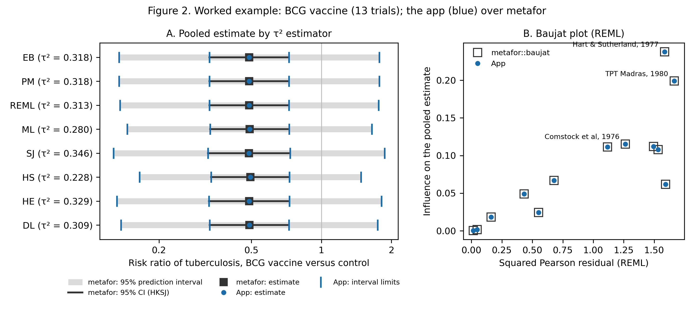
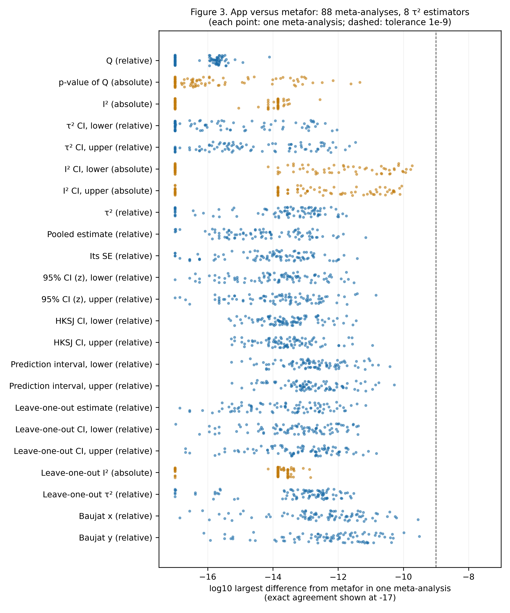
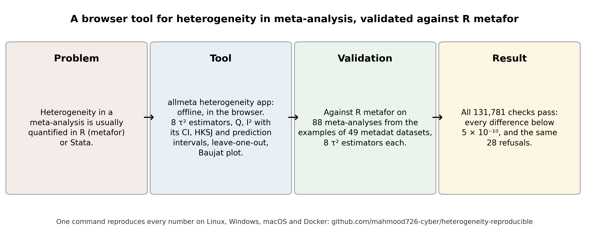

All runs · Repository · Live app
Heterogeneity app: validation against metafor: latest verified full run
Run 37738100785 on commit aed7a6d, published 2026-10-08 06:39 UTC. Full validation: every number in the paper.
| Platform | Result |
|---|---|
| Docker (canonical) | 44/44 numbers reproduced |
| Linux | 44/44 numbers reproduced |
| Windows | 44/44 numbers reproduced |
| macOS | 44/44 numbers reproduced |
| Cross-platform comparison (corpus and engine output bit-identical on the strict platforms) | success |
Every checked number (canonical run: full-docker)
| Quantity | Expected | Reproduced | Result |
|---|---|---|---|
| help_pages | 116 | 116 | PASS |
| pages_contributing | 49 | 49 | PASS |
| pages_timed_out | 2 | 2 | PASS |
| meta_analyses | 88 | 88 | PASS |
| studies_total | 2241 | 2241 | PASS |
| k_min | 4 | 4 | PASS |
| k_max | 160 | 160 | PASS |
| measures | 23 | 23 | PASS |
| estimators | 8 | 8 | PASS |
| configurations | 704 | 704 | PASS |
| dl_refused | 28 | 28 | PASS |
| configurations_compared | 676 | 676 | PASS |
| checks_total | 131781 | 131781 | PASS |
| checks_passed | 131781 | 131781 | PASS |
| checks_failed | 0 | 0 | PASS |
| all_pass | 1 | 1 | PASS |
| check_formula_holds | 1 | 1 | PASS |
| refusals_agree | 1 | 1 | PASS |
| all_below_5e-10 | 1 | 1 | PASS |
| estimates_below_1e-10 | 1 | 1 | PASS |
| displayed_numbers | 120720 | 120720 | PASS |
| displayed_fail | 0 | 0 | PASS |
| baujat_crosschecks_agree | 568 | 568 | PASS |
| baujat_crosschecks_other | 0 | 0 | PASS |
| metafor_default_between_1e-5_and_1e-4 | 1 | 1 | PASS |
| qprofile_upper_beyond_metafor_default | 1 | 1 | PASS |
| ex_k | 13 | 13 | PASS |
| ex_Q | 152.2 | 152.233 | PASS |
| ex_df | 12 | 12 | PASS |
| ex_I2 | 92.1 | 92.117 | PASS |
| ex_I2_lo | 81.9 | 81.921 | PASS |
| ex_I2_hi | 97.7 | 97.678 | PASS |
| ex_tau2_lo | 0.1197 | 0.119718 | PASS |
| ex_tau2_hi | 1.1115 | 1.111479 | PASS |
| ex_tau2_min | 0.228 | 0.22836 | PASS |
| ex_tau2_max | 0.346 | 0.34552 | PASS |
| ex_tau2_min_est | HS | HS | PASS |
| ex_tau2_max_est | SJ | SJ | PASS |
| ex_rr_reml | 0.49 | 0.4894 | PASS |
| ex_rr_reml_hk_lo | 0.33 | 0.3301 | PASS |
| ex_rr_reml_hk_hi | 0.73 | 0.7257 | PASS |
| ex_rr_reml_pi_lo | 0.14 | 0.136 | PASS |
| ex_rr_reml_pi_hi | 1.76 | 1.7617 | PASS |
| ex_baujat_top | Hart & Sutherland, 1977 | Hart & Sutherland, 1977 | PASS |
Also as reproduction_report.md and stats.json; every run's full outputs are artefacts of the run.
Figures from this run


